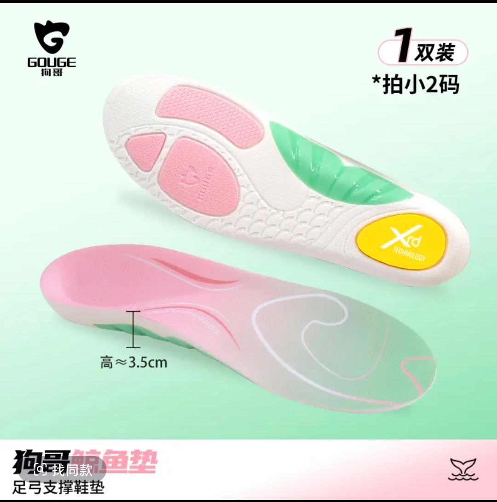
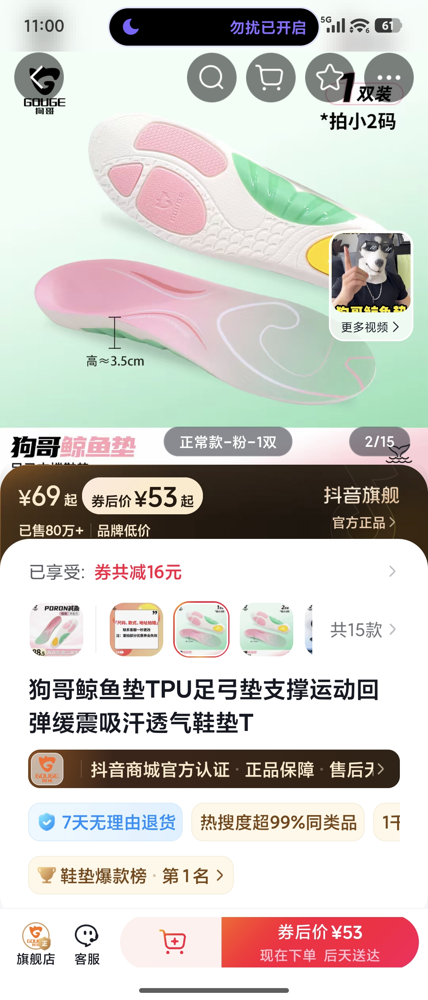

GOUGE 狗哥官方旗舰店
鲸鱼垫 TPU 足弓支撑鞋垫
S3 挖掘场景 · 独立调试产物 · 品类：健康鞋垫
TPU 足弓支撑
PORON 减震回弹
吸汗透气 · 高约3.5cm
已售 80 万+ · 鞋垫爆款榜第 1
券后 53 元起


品类风险（内容侧核验）：鞋垫品类有"智商税"质疑（"以前一直觉得足弓垫是智商税"），且内容明确提示"可缓解疲劳、没有治疗效果"。策略上必须：先证人群刚需（久站/通勤），再讲体感，不碰疗效承诺。
S3 输入（简版）：主攻人群 = 久站职业党（护士/教师/站班）× 通勤走路党；主攻买点 = 足弓支撑久站不累 · 回弹缓震踩屎感 · 爆款信任。以下场景全部来自内容侧先探 + 四问填充。
场景需求卡 · 主攻 3 / 可测试 1
SC-01 站一天实测 · 脚不痛主攻
触发护士/教师/站班人群下班的脚，站 8 小时以上。
画面护士站/讲台实拍：下班脱鞋的脚 + 换上鲸鱼垫的日常对比；"真的有人站一天脚都不痛吗？"（狗哥自家内容原话）→ 塞进鞋垫展示足弓被撑起。
痛点站一天脚底板痛、后跟发胀、下班腿酸。
拍法：职业场景实拍 + 换垫前后体感对比。口播："护士教师久站，选对鞋垫比选对鞋更重要"
已验证 护士教师久站选垫内容 2.3k 赞；狗哥自家"站一天脚不痛"内容；"站班选对鞋垫比鞋子更重要"
SC-02 通勤日常 · 换进每双鞋主攻
触发日常通勤/逛街走路多，普通鞋底太薄。
画面把鲸鱼垫塞进日常穿的板鞋/马丁靴，按压回弹特写；走路姿态对比（足弓撑起后步态更稳）。
痛点鞋底硬走久了累、足弓塌走路姿势不对。
拍法：塞垫过程 + 按压回弹 + 步态对比。口播："每双鞋都能用的鞋垫，走路真没以前累了"
已验证 用户原话"坚持穿 2 个月，足弓被撑起来、走路姿势更规范、腿变直"
SC-03 踩屎感测评 · 久站不累主攻
触发刷到"踩屎感"鞋垫测评想验证真假。
画面按压回弹慢镜 + 穿劳保鞋/运动鞋久站一天后的体感反馈，一年使用回顾。
痛点怕踩雷、软垫用两天就踩扁。
拍法：测评式实拍（按压/回弹/久站）。口播："踩屎感鞋垫我用了一年，真实反馈"
已验证 踩屎感久站鞋垫一年真实评价 76 赞；普通鞋垫"2 小时踩扁"对比内容
SC-04 扁平足自救 · 科普体验可测试
触发扁平足/足弓塌陷人群久走膝盖疼。
画面扁平足脚型特写 → 科普"受力重新分配"（前掌+后跟+足弓三点分担）→ 上垫体验。
痛点扁平足走路累、膝盖不适。
拍法：科普口播 + 体验反馈。口播："扁平足走路累？问题可能出在鞋垫"
已验证 久站足弓支撑科普内容；"膝盖疼脚底板疼"体验内容（注意标注"缓解疲劳非治疗"）